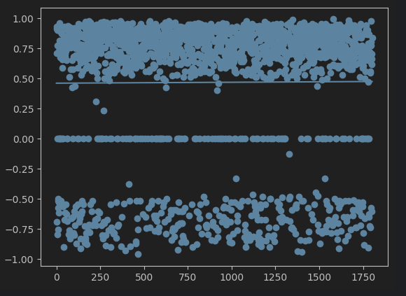

Sentiment Analysis Overtime On CampusUsing word frequencies from each article of The Exponent, we measured certain sentiments/moods/emotions and how the world wars affected their levels and thus the effect on students especially during wartime. |

Compound Sentiments OvertimeUsing word frequencies from each article of The Exponent, we measured compound sentiments/moods/emotions specifically, and what it entails about the presence or absence of bias in the journalism of The Exponent. |
Sentiments in articles of The Exponent during WW2
- Each dot is an article from issues of The Exponent from 1936 to 1945.
- The y-axis represents the percentage of tokens in that article containing the specified emotions: positive, negative, and neutral.
- The x-axis represents the publication date of each article.
- The "compound" sentiment represents articles that contain all three: positive, negative, and neutral sentiment words.